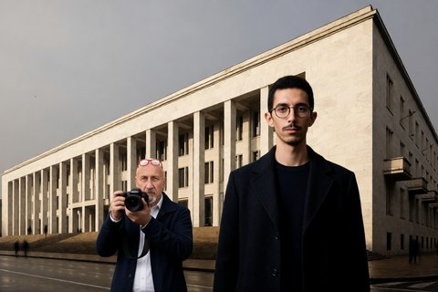

Cronaca · 30 ottobre 2026

Ben Mohamed Ezzedine Sebai si accusò di 14 omicidi, e per quattro di quelli in carcere c'erano già altre persone. Lo Stato gli ha creduto per i delitti rimasti senza nome e non per quelli già chiusi.
di Franco Zanghì
Cronaca · 30 ottobre 2026

Un Chinook dell'Aviazione dell'Esercito è precipitato giovedì pomeriggio in un campo a Gorice, nel nord della Bosnia, pochi istanti dopo il decollo da Brčko. A bordo c'erano 15 persone.
di Franco Zanghì
Sicilia · 30 ottobre 2026

Il deputato regionale aveva denunciato presunte infiltrazioni mafiose nelle imprese di pulizie degli ospedali palermitani. Sulle sue segnalazioni lavorano la commissione regionale Antimafia e la Guardia di finanza.
di Franco Zanghì
Cronaca · 30 ottobre 2026

Dai crateri sommitali è uscita una nube di cenere alta 4 chilometri e l'avviso per l'aviazione resta al livello più alto. Lo spazio aereo è stato riorganizzato, ma gli arrivi a Fontanarossa sono saliti a 12 l'ora.
di Franco Zanghì
Politica italiana · 29 ottobre 2026

Dopo la scarcerazione di Youssef Siher la presidente del Consiglio ha parlato di decisione vergognosa. I vertici del tribunale hanno replicato per iscritto, senza mai nominarla, e il tono è salito da entrambe le parti.
di Franco Zanghì
Cronaca · 29 ottobre 2026

Una finta impiegata comunale chiedeva ai parroci di restituire un contributo versato per sbaglio, su una carta ricaricabile. Dei dieci indagati dalla procura di Torino, otto vengono dal Siracusano.
di Franco Zanghì
Cronaca · 28 ottobre 2026

L'auto che ha attraversato il corteo di Torino era davvero della polizia. Ma il racconto che gira sui social sbaglia la data, la ricostruzione della targa e arriva a parlare di comportamento terroristico.
di Franco Zanghì
Cronaca · 28 ottobre 2026

Per la giudice Tiziana Landoni nei post dell'amministratore del Movimento 17 ottobre non si prospettano azioni violente, e mancano il pericolo di fuga e quello di ripetere il reato. L'indagine resta aperta.
di Franco Zanghì
Cronaca · 28 ottobre 2026

Nell'aula bunker di Milano l'uomo che per i pm teneva insieme Cosa nostra, 'ndrangheta e camorra ha cambiato avvocato e ha deciso di collaborare. È il sesto pentito del processo.
di Franco Zanghì
Cronaca · 27 ottobre 2026
In televisione la relatrice di tesi di Youssef Siher parla di gogna mediatica. Ma le carte del fermo non riguardano i commenti dei follower: riguardano i messaggi scritti da chi quella pagina la gestiva.
di Franco Zanghì
Cronaca · 27 ottobre 2026

Un milione e duecentomila euro in contanti trovati in casa, pensioni di invalidità costruite su certificati firmati senza visita e presidi ortopedici pagati anche in pesce e vino. Il processo a un imprenditore comincia a dicembre.
di Franco Zanghì
Cronaca · 26 ottobre 2026

Una via di fuga sui tetti ricostruita con il drone, impronte su un palo della luce, tracce biologiche sotto le unghie. Gli elementi si accumulano, l'unico indagato resta uno solo, e perfino la sua difesa sostiene che a uccidere sia stato un altro.
di Franco Zanghì
Cronaca · 25 ottobre 2026

Youssef Siher, 30 anni, italiano di seconda generazione, è in carcere a Milano: la Procura lo indica come l'amministratore del Movimento 17 ottobre. Attorno al suo nome la politica discute di cittadinanza, e quasi nessuno è andato a leggere la norma.
di Franco Zanghì
Cronaca · 24 ottobre 2026

Sotto il mare davanti ad Alicudi ci sono vulcani attivi, e la sequenza sismica in corso non li riguarda. Una faglia e un vulcano fanno tremare la terra in due modi diversi, e sugli strumenti lasciano due firme che i sismologi riconoscono a colpo d'occhio.
di Franco Zanghì
Cronaca · 23 ottobre 2026

Il terremoto delle 12.19, a 9 chilometri di profondità a nord-ovest di Alicudi, è stato avvertito da Palermo a Catania: scuole svuotate, gente in strada, nessun danno a persone. È l'episodio più forte di una sequenza cominciata martedì sera.
di Franco Zanghì
Cronaca · 22 ottobre 2026

Gli assessori del Comune hanno firmato le dimissioni uno dopo l'altro, mentre la Procura europea indaga sugli appalti e il sindaco è fra gli indagati. Lui resta al suo posto, e intanto una città da quasi 120 mila abitanti è senza giunta.
di Franco Zanghì
Cronaca · 22 ottobre 2026

Due giorni di devastazioni nel centro di Milano dopo un corteo autorizzato contro il carovita. I bersagli però non sono stati scelti a caso, e la ricerca sulle folle spiega perché: dentro un gruppo le regole non spariscono, cambiano.
di Franco Zanghì
Cronaca · 16 ottobre 2026

Il comandante generale dei carabinieri promette che chi ha sbagliato pagherà, il reparto scientifico risponde che non ha sbagliato nessuno. In mezzo ci sono il dna estratto dalle tracce del delitto e un impegno scritto nel 2007 e poi disatteso.
di Franco Zanghì
Cronaca · 16 ottobre 2026

Due giorni dopo il racconto della ditta confiscata agli Ofrìa a Barcellona Pozzo di Gotto, una sentenza della Cassazione rimasta fuori dalle cronache rimette in fila le date e corregge un passaggio inesatto di quella ricostruzione.
di Franco Zanghì
Cronaca · 16 ottobre 2026

Circa 3.000 metri quadri sotto sequestro in contrada Playa, con manufatti industriali collassati in mare. Fra i tre indagati c'è il sindaco di Patti, Gianluca Bonsignore, che dieci giorni fa aveva già ricevuto un avviso di garanzia in un'altra vicenda.
di Franco Zanghì
Cronaca · 15 ottobre 2026

La Cassazione ha respinto l'ultimo ricorso dell'ex pubblico ministero di Mani pulite. In mezzo ci sono i verbali segreti di Piero Amara, una loggia di cui non è stata trovata prova e il magistrato che quei verbali li consegnò.
di Franco Zanghì
Cronaca · 14 ottobre 2026

Un decreto di 644 pagine del gip di Caltanissetta muove rilievi pesantissimi a Giuseppe Pignatone e nello stesso momento archivia: il reato ipotizzato era prescritto prima ancora che l'indagine cominciasse.
di Franco Zanghì
Cronaca · 14 ottobre 2026

La presidente della commissione antimafia dice di aver trovato segretate carte che non si aspettava, e fa un esempio solo: la stanza del giudice, chiusa alle 23:25 del 19 luglio 1992.
di Franco Zanghì
Cronaca · 13 ottobre 2026

Un decreto di archiviazione definisce depistante l'attività del senatore Roberto Scarpinato, che non è indagato. Sullo sfondo ci sono le parole private di Gioacchino Natoli sulla famiglia Borsellino, agli atti da mesi.
di Franco Zanghì
Cronaca · 12 ottobre 2026

Depositate le motivazioni della sentenza di primo grado sulla Bellinvia, autodemolizioni di Barcellona Pozzo di Gotto sotto confisca dal 2011. Per la giudice l'azienda sarebbe rimasta condizionata dalla famiglia anche dopo i provvedimenti dello Stato.
di Franco Zanghì
Cronaca · 11 ottobre 2026

Una consigliera della Corte d'Appello di Milano scopre dalla stampa di essere finita in un'ipotesi di reato. Le sue comunicazioni riservate con il ministero, che riguardano la morte della madre, escono su un quotidiano nazionale.
di Franco Zanghì